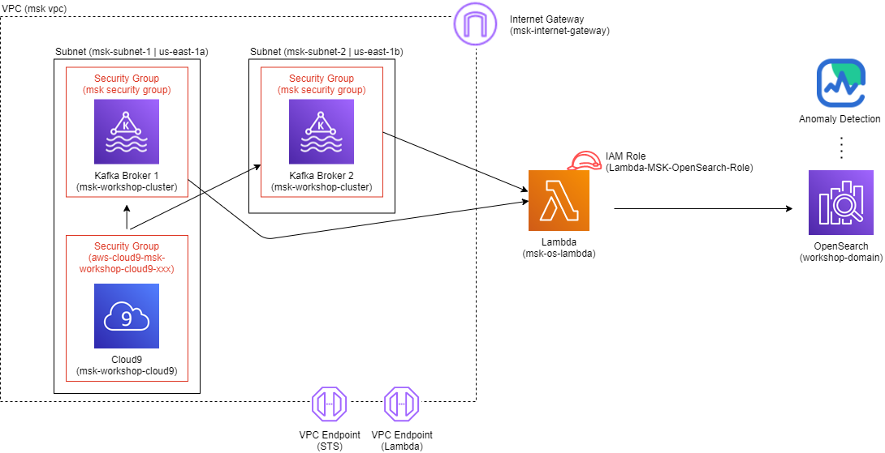

This workshop covers how to use the built in anomaly detection capabilities of Amazon OpenSearch service. Additionally it covers a method of ingesting real time data from Amazon Managed Streaming for Apache Kafka (MSK) into Amazon OpenSearch service.
In this workshop you will implement the following architecture

The architecture uses a python script run in a Cloud9 environment to simulate devices creating log data. The data is sent in real time to a MSK cluster. A Lambda function reads the log data sent to MSK and ingests the data into OpenSearch. Once the OpenSearch index is created and populated with data we use the anomaly detection capabilities of OpenSearch to run a historic analysis and detected any anomalies that may have occurred.
When you are ready to begin the lab navigate to Getting started